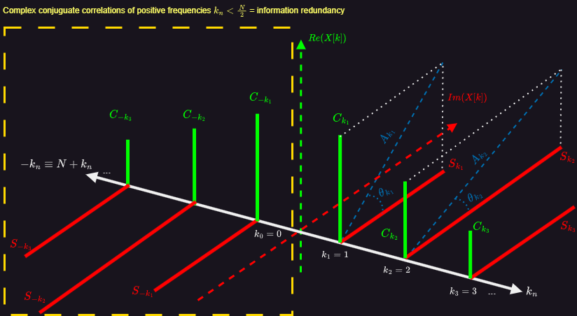

Further discussions: Signal processing
Overview
Here is the overview of the topics that I covered:
- FFT, Hilbert transform and its concrete applications;
- Laplace transform and Z-transform
- Wavelet analysis
- Some modulation techniques such as QAM16, OFDM and QPSK;
- Signal encoding and encryption;
- Some communication protocols on the physical layer.
Hilbert analysis
Discrete Fourier Transform (DFT)
Questions and clarifications
Why is this used for ?
This transform allows us to better identify the contribution of frequencies in a signal, which most of time are not noticeable when looking at the signal in its time representation. However, to be able to manupilate the spectrum density with a computer, the signal (represented in both domains) has to be finite and discrete (i.e., limited number of points/samples \(N\)). The DFT essentially performs both signal sampling and spectrum quantization. In fact, the DFT is simply a discrete version of the Fourier transform. As a result, integrals are replaced by sums. \[ X[k] = \sum_{n=0}^{N-1} x[n] e^{-i2\pi kn/N} \] \(k\) is the frequency index of the discrete spectrum and determines how fast (frequency) we travel around the complex unit circle (1 round = 1 cycle of the signal's time length), and \(n\) is the time index of the signal sampled at each \(T_e\).
This can also be viewed as a dot product between the signal and the complex exponential domain. The result evaluates the correlation between those.
However, \(k\) and \(n\) are not directly the physical frequency and time of the signal, which can be retrieved using the following formulas: \[ f = \frac{k}{N T_e} \] \[ t = \frac{n}{T_e} \] where \(f\) is the physical frequency, \(t\) is the physical time and \(NT_e\) is the length of the signal.
As a result, we increment the \(k\) index to know the contribution of each frequency in the signal. With the illustration below, that may come clearer. It illustrates how the length of the signal \(NT_e\) is related to the index \(k\).

\(k=0 \rightarrow \) 0 cycle around the circle | \(k=1 \rightarrow \) 1 cycle around the circle | \(k=2 \rightarrow \) 2 cycle around the circle
Why are there negative frequencies at all ?
Negative frequencies account for information redundancy. This redundancy comes from the fact that in the complex domain there is a complex conjugate symmetry. This results in the following property: \( arg(e^{i\omega}) = -arg(e^{i(2\pi-\omega)}) = -arg(e^{-i\omega}) \). Also, \(e^{i\theta}\) is a periodic function: \( e^{i\theta} = e^{i(2\pi+\theta)} \). This is due to the Euler's formula: \(e^{i\theta} = cos(\theta) + isin(\theta)\).
Therefore, performing an anti-clockwise (positive frequencies first) or clockwise (negative frequencies first) rotation is equivalent. This has no impact on the magnitude of each frequency, but only their phase. So all angles (i.e., each frequency's contribution) taken after \(\pi\) (i.e., \(k > \frac{N}{2}\)) are redundant (with a change in the sign) because we basically measure the same frequencies before and after \(\pi\).The direction of the rotation is the only difference.
Note that instead of taking negative frequencies \(-i\omega\), we could take \(i(\omega + \pi) \). The result would be a double-sided graph with only positive frequencies. In Matlab, we can use fftshift to have the graph centered on 0 and consequently having the negative frequencies appear (right side graph).


This redundancy means that we could only deal with the first half of the graph. By doing so we obtain a so-called one-sided spectrum where only positive frequencies remain. This graph contains all necessary information to reconstruct the original signal.

At some point when \(k\) is greater than \(N/2 \equiv \pi\), the negative frequencies become simply the conjugate of the positive frequencies. That means, we could re-write the DFT as: \[ X[k] = \sum_{n=0}^{N-1} x[n] e^{i2\pi kn/N} \] The \(-\) sign in the exponential term was removed which causes to travel around the circle in the positive direction.
The image on the right introduces a visual interpretation of this transform. We clearly see that \( X[k] \) is a complex vector composed of \( C_{k_n} \) and \( S_{k_n} \) which respectively account for frequency correlation of cosinus and sinus for different frequencies. From this complex signal, we can calculate the frequency contribution \(A_{k_n}\) and the phase \(\theta_{k_n}\) at each frequency index. We can also notice that if we keep only the green part of \(X[k]\), we get back to the real signal \(x[n]\) but we lose information about the instantenous amplitude and phase of the signal. This complex nature of the signal will be used for the extraction of a so-called analytic signal that uses the Hilbert transform section.
Why do we sometimes only consider the absolute value of the FFT ?
The absolute value informs us about the contribution (weight) of the specific frequency \(f=\frac{k}{NTe}\) to the signal regardless of the phase correlation. Therefore, as far as the magnitude is concerned, it does not matter in which direction we travel the circle around.
What does the phase of the FFT actually tell us ?
The phase of the FFT is: \( \phi(t) = arctan(\frac{S_k sin(2\pi\frac{k}{N}n)}{C_k cos(2\pi\frac{k}{N}n)}) \), where \(S_k\) and \(C_k\) are correlation coefficients computed with the DFT for a given frequency index \(k\).
- If the phase becomes positive (> 0°), it means that the signal is more correlated with the imaginary part (sinus) of the complex exponential.
- If the phase becomes negative (< 0°), it means that the signal is also more correlated with the imaginary part.
- If the phase is around 0°, it means that the signal is also more correlated with the real part part (cosinus).
To what extent does the Nyquist frequency theorem explain the redundancy of information with the FFT (negative frequencies) ?
The value \(k\) accounts for how many cycles (periods) of the length of the signal we travel. Actually, the maximum frequency that should be considered is \( f=\frac{k}{NT_e} \leq \frac{f_e}{2} \implies k_{max}=\frac{N}{2} \). Beyond this value, the frequency spectrum gets folded back on itself and information is duplicated. This is where negative frequencies show up.
Example
Let's take an example to better understand this. Let's consider we sample a signal over 1 second with 10 points (i.e., \(N=10\)). This implies that \(f_e=10\)Hz so \(f_{max}=5\)Hz. Therefore, the frequency resolution is \(\delta \omega=\frac{2\pi}{NT_e} \implies \delta f=\frac{1}{NT_e} = 1\)Hz.
Now we want to know how much the \(k=1\) frequency contributes to the signal. The frequency tested here is \(f_{k=1}=\frac{1}{NT_e}=1\)Hz which results in traveling the unit circle with this angle pace \(\widehat {x}[n]=2\pi\frac{n}{10}\), \(0 \leq n \leq N-1=9\).
Also let's consider the case where \(k=9\). The frequency tested here is \(f_{k=9}=\frac{9}{NT_e}=9\)Hz, we have got: \(\widehat {x}[n]=2\pi\frac{9n}{10}=-2\pi\frac{n}{10}\), \(0 \leq n \leq N-1=9\).
As we can see, though we increase the frequency, the speed at which we travel the circle does not increase, only the sign of the direction changes (negative sign). This effect shows clearly the effect of the Nyquist-Shannon criterion, beyond \(k=\frac{N}{2}\) (so \(k=5\) in that case), the frequency gets folded back on itself causing negative frequency values to appear. As a result, these frequencies do not bring any new information to the signal. We conclude that the \(\pi\) periodicity of the complex exponential domain is the reason why we have negative frequencies. In fact, the negative frequencies are the conjugate of the positive frequencies.
The FFT
A different approach
The DFT formula can be re-written as a matrix operation (vector rotation) between the sampled signal and the complex exponential domain. \[ X[k] = \begin{bmatrix} X_0 \\ X_1 \\ \vdots \\ X_{N-1} \end{bmatrix} = \begin{bmatrix} 1 & 1 & 1 & \cdots & 1 \\ 1 & e^{-i2\pi k/N} & e^{-i2\pi (2k)/N} & \cdots & e^{-i2\pi (N-1)k/N} \\ 1 & e^{-i2\pi k/N} & e^{-i2\pi (2k)/N} & \cdots & e^{-i2\pi (N-1)k/N} \\ \vdots & \vdots & \vdots & \ddots & \vdots \\ 1 & e^{-i2\pi k/N} & e^{-i2\pi (2k)/N} & \cdots & e^{-i2\pi (N-1)k/N} \\ \end{bmatrix} \times \begin{bmatrix} x_0 \\ x_1 \\ \vdots \\ x_{N-1} \end{bmatrix} \] As mentioned earlier, we obtain a complex vector \(X[k]\) (each component is a complex exponential number) of length \(N\), which is the same length as the signal \(x[n]\). The matrix has symmetries (due to the periodicity of the complex exponentials) that can be leveraged to reduce the number of complex multiplications, which is the goal of the FFT algorithm.
Note that each component of the \(X[k]\) can also be seen as a polynom \( X[k] = \sum_{n=0}^{N-1} \lambda_n \omega^n_k \), with \( \lambda_n = x_n \) and \( \omega_k = e^{-i2\pi k/N} \). This representation will be used further in an algorithm.
My understanding
As considered earlier on this page, traveling the circle with \(2\pi\frac{k+\frac{N}{2}}{N}n = 2\pi\frac{k}{N}n +\pi n \mod 2\pi = -2\pi\frac{k}{N}n \mod 2\pi \). As a result we conclude that for \(k > \frac{N}{2}\) indices the exponential number is the conjugate of the exponential number at \(k\). The example below illustrates this periodicity for \(n=1\), we take all possible values of \(k < N-1\). \[ \left\{ \begin{matrix} X[0] = x[0]e^{-i2\pi 0n/N} \\ X[1] = x[0]e^{-i2\pi n/N} \\ \vdots \\ X[N-2] = x[0]e^{-i2\pi n\frac{N-2}{N}} = x[0]e^{i2\pi \frac{2n}{N}} = Re(X[2])-iIm(X[2]) \\ X[N-1] = x[0]e^{-i2\pi n\frac{N-1}{N}} = x[0]e^{i2\pi \frac{n}{N}} = Re(X[1])-iIm(X[1]) \\ \end{matrix} \right. \] We clearly notice that we cut by half the number of complex computations. It is also important to notice that this periodicity applies to the time axis \(n\) as well. \[ X[k] = x[0]e^{-i2\pi 0k/N} + x[1]e^{-i2\pi k/N} + \cdots + x[N-2]e^{i2\pi \frac{2k}{N}} + x[N-1]e^{i2\pi \frac{k}{N}} \] \[ \implies X[k] = x[0]e^{-i2\pi 0k/N} + x[1]e^{-i2\pi k/N} + \cdots + x[N-2]\frac{(Re(X[k]_{x[2]})-Im(X[k]_{x[2]}))}{x[2]} + x[N-1]\frac{)Re(X[k]_{x[1]})-Im(X[k]_{x[1]}))}{x[1]} \] where \(X[k]_{x[n]} = x[n]e^{-i2\pi kn/N}\) is the complex exponential number at \(k\) for \(x[n]\). This value is assumed to be already computed.
Application: Cooley-Tukey FFT algorithm
This algorithm separates even and odd signal's indices
- Even/odd sepration
- Circular periodicity
- Recursive computations
\[ \left\{ \begin{matrix} X[k] = E[k] + e^{-i2\pi k/N}O[k] \\ X[k+\frac{N}{2}] = E[k] - e^{-i2\pi k/N}O[k] \\ \end{matrix} \right. \]
From the DFT to the HT
The Hilbert transform relies on the Fourier transform. Its main goal is to construct an analytic signal which provides relevant information about the real signal.
Procedure
Here are the steps that are executed when we operate the Hilbert transform of a signal:
- Compute the original signal's FFT;
- Shift by -90° all frequencies above 0 and by 90° all frequencies below 0 (or above \(\pi\))
- Compute the IFFT of the transformed signal.
It is important to see that this procedure does not affect the amplitude spectrum. This means that the frequency correlation itself does not change (i.e., detected frequencies are the same as before). This has the new signal become orthogonal to the original one. As a result the Hilbert transform computes a signal in the same domain (time domain) but with a phase shift of 90°. This is given by this formula: \[ \mathcal{H}(x(\tau))(t) = \widehat x(t) = \frac{1}{\pi} \int_{-\infty}^{+\infty} \frac{x(\tau)}{t-\tau} d\tau = (x(\tau)*\frac{1}{\pi \tau})(t) \] where \(x(t)\) is the original signal and \(\widehat {x}(t)\) is the phase shift of the new signal. This formula might seem daunting but we can switch to the Fourier domain to make it more understandable. \[ \mathcal{F}(\frac{1}{\pi t}) = -i sgn(\nu) \implies \mathcal{F}(\widehat x(t)) = \left\{ \begin{matrix} X(\nu)e^{-i2\pi},\ \nu > 0 \\ X(0) = 0 \\ X(\nu)e^{i2\pi},\ \nu < 0 \end{matrix} \right. \] where \(X(\nu)\) is the original signal's Fourier transform. This formula shows clearly the +/- 90° phase shift.
Analytic signal
This transform aims at extracting this new analytic (complex) signal: \[ x_a(t) = x(t) + j \mathcal{H}(x(t)) = x(t) + j \widehat {x}(t) = A(t) e^{j\theta(t)} \rightarrow \left\{ \begin{matrix} A(t) = \sqrt{x(t)^2 + \widehat {x}(t)^2} \\ \theta(t) = arctan(\frac{\widehat {x}(t)}{x(t)}) \end{matrix} \right. \] where \(x(t)\) is the original signal and is also called the base-band signal. \(\widehat {x}(t)\) is the phase shift of the original signal.
This signal features an interesting property which is to remove information redundancy, thereby having only positive frequencies in its Fourier spectrum.
This signal can also be computed by following these steps:
- Compute the original signal's FFT;
- Set all negative frequencies coefficients to 0;
- Double all positive frequencies coefficients for energy conservation;
- Compute the IFFT of the transformed signal.
It is really important to grasp the purpose of this procedure and how we do end up with this analytic signal in the end. By setting all negative frequencies coefficients to 0 (2), we actually prevent that signal from becoming real again when computing the IFFT (4). Indeed, in the Fourier domain, negative frequencies coefficients allow, when added with positive frequencies coefficients, to cancel out the imaginary part of the complex exponential, thereby obtaining a real signal. What the IFFT essentially does is this: \[ x[n] = \sum_{k=0}^{N-1} X[k] e^{i2\pi kn/N} = X[0] + \sum_{k=1}^{N/2} X[k] e^{i2\pi kn/N} + X[N-k] e^{-i2\pi kn/N},\ with\ X[k]=\overline{X[N-k]} \] To obtain the analytic signal, we actually do this: \[ x_a[n] = \sum_{k=0}^{N/2} X[k] e^{i2\pi kn/N} = X[0] + 2\sum_{k=1}^{N/2} X[k] e^{i2\pi kn/N} = X[0] + 2\sum_{k=1}^{N/2} (C_k + i S_k) e^{i2\pi kn/N} \] where \(C_k\) and \(S_k\) are respectively the cosinus and sinus correlation coefficients computed with the DFT for a given frequency index \(k\). The \(2\) accounts for energy conservation, it compensates for the cancellation of negative frequencies. Eventually, we notice that the signal is complex because we stop at \(k=\frac{N}{2}\) andt to make the link with the parameter calculated in the section just above (\A(t)\) and \(\theta(t)\), we can re-write \(x_a[n]\) such as: \[ x_a[n] = X[0] + \sum_{k=1}^{N/2} A_k e^{i \theta_k} e^{i2\pi kn/N} = X[0] + A[n] e^{i \theta[n]} \] where \(A_k\) and \(\theta_k\) are respectively the magnitude and phase of the signal for each \(k\). In the eend, this signal carries the same information as \(C_k\) and \(S_k\) but in a different form. With this approach, we have now a complex signal from which we can extract several features of the original signal such as the instantaneous amplitude \(A[n]\) and phase \(\theta[n]\).
Application
Let's take a simple example to understand that better.
Imagine we want to analyse the following real signal: \( x[n] = cos(2\pi \omega_0 nT_e) + 4 sin(2\pi \omega_1 nT_e) + 2 cos(2\pi \omega_2 nT_e) + 3 sin(2\pi \omega_2 nT_e) \).
We know already its Fourier representation, it is: \( X[k] = C_{k_0} + C_{-k_{0}} + i (S_{k_1}+S_{-k_{1}}) + C_{k_2} + iS_{k_2} + C_{-k_{2}} + iS_{-k_{2}} \), with \( S_{-k_n} = -S_{k_n} \) and \( \omega_n = 2\pi\frac{k_n}{NT_e} \).
We can now apply the IFFT but only over positive frequencies to retrieve the analytic signal: \( x_a[n] = 2 (C_{k_0} e^{i\omega_0 n} + iS_{k_1} e^{i\omega_1 n} + C_{k_2} e^{i\omega_2 n} + iS_{k_2} e^{i\omega_2 n} ) = x[n] + i \mathcal{H}(x[n]) \).
Note that if we take only the real part (band-base) of this signal, we end up with the real signal \(x[n]\). Also, the conservation of the complex form with the Fourier transform in the time domain is great because now the signal carries all the necessary information to compute useful instantenous (i.e., at a particular moment \(t_0=n_0T_e\) in time) properties of the signal because it includes both sinus and cosinus correlations. In fact, at each time index \(n\), we can compute the instantaneous amplitude and phase of the signal. Moreover, the Fourier transform of this signal is much more convenient to work with because it has only positive frequencies.
To summarize, we use the Fourier analysis to extract properties of a signal that are not blatant when considered in its time representation. Then, we keep these newly acquired informations (frequencies contributions and phases) by preserving the complex nature of the signal. This allows to carry more information because the analytic signal has one more dimension (imaginary axis). To preserve this complex nature we only need to operate the IFFT over the positive frequencies and double their contribution to account for the loss of negative frequencies (i.e., energy conservation). By doing so, we don't lose any signal's information because all the necessary information is contained in the positive frequencies.
Laplace: beyond the Fourier transform
In this section, I would like to expand on the Laplace transform; its mathematical meaning as well as its usual applications.
As indicated in this section's title, the Laplace transform is an generalization of the Fourier transform. It means that it can describe and analyse a wider range of signals. Indeed, the Fourier transform is limited to describing a signal only by using its frequency components (the operation involves a scalar product between the signal and the complex unit circle (cf here)). It helps us in vizualizing clearly the presence and contribution of each frequency in the signal. With the Laplace transform, a new parameter \(\alpha\) is added, which accounts for a scaling factor in the complex exponential domain. Thus, besides providing us information about the frequency components of the signal, it also gives us information about the amplitude dynamics of the signal. In summary, it identifies the presence of decreasing or increasing oscillations in the signal.
The Z-transform
The Z-transform is simply the Laplace transform applied to discrete signals: \[ X(p) = \int_{0}^{\infty} x(nT_e) e^{-pt}dt = \int_{0}^{\infty} \sum_{n=0}^{\infty} x(nT_e) \delta(t-nT_e) e^{-pt}dt = \sum_{n=0}^{\infty} x(nT_e) e^{-pnT_e} \equiv X(z) = \sum_{n=0}^{\infty} x[n] z^{-n} \] where \(z\) is a complex number and can be re-written like this: \(z=e^{pT_e}=e^{(\alpha+i\omega)T_e}=e^{\alpha T_e} e^{i\omega T_e}\).
What we obtain is a 2D complex vector \(X(z)\), where each \(z\) represents a specific scaling factor \(\alpha\) associated with a frequency component \(\omega\).
Note that with \(\alpha=0\), we get back to the Fourier transform \(z=e^{i\omega T_e}=e^{i 2\pi \nu T_e}\), which makes sense because this means no scaling factor in the signal and only constant oscillations (what the FT measures).
Applications
This transform is particularly relevant when it comes to determining the stability of a system. A system whose impulse response outputs a signal with increasing oscillations \(\alpha > 0\) is unstable. This can also be pictured in the complex exponential plane, where the poles of the system are located. If the poles are located in the right half-plane \(\alpha > 0\), the system is unstable.
The formula shown above clearly demonstrates that the sampling period \(T_e\) has an impact on the scaling of the system's reponse. Indeed, the smaller the sampling period, the slower the amplitude dynamics \(e^{(\alpha T_e)}\).
It has also useful features that make it easy to resolve linear differential equations.
Wavelet analysis
The Fourier transform is also quite limited because it assumes that a signal is stationary. It does not indicate where frequencies are located in time. For that matter, we need to expand the Fourier transform to a 2D transform, where the second parameter would be the time delay \(\tau\).
Short-Time Fourier transform
This transform was thought up to temporally identify frequencies in a signal. Unlike the Fourier transform, here we restrain the identification of frequencies within a window function. We slide this function over the signal and perform for each delay \(\tau\) a localized Fourier transform. The formula is defined as follows: \[ X(\tau, \omega) = \int^{+\infty}_{-\infty} x(t)w(t-\tau)e^{i\omega t} dt \] where \(w(t-\tau)\) is a window function that is applied to the signal \(x(t)\) to localize the frequencies in time. However, this technique has a limitation because the size of the window does not change with the frequency tested. We know that higher frequencies need high time resolution because they last short (i.e., it takes little time to identify them properly), which also means low frequency resolution. On the other hand, lower frequencies need low time resolution because they last long (i.e., it takes time to identify them properly), which also means high frequency resolution. Considering what I just brought up, we need to adjust the size of the window according to the frequency tested. This will be the goal of the Wavelets transform.
Note that the truncature of the signal with the window function has consequences in the spectrum density. Indeed, jitters can appear depending on the type of window. Therefore, the type of truncature should be wisely chosen according to our goals. Here is a wide selection of window functions to chose from. This is explained by the Heisenberg uncertainty principle which states that we cannot have a perfect time and frequency resolution at the same time.
Wavelets transform
The Wavelets transform follows up the STFT but adjusts the time (i.e., frequency) resolution accordingly. It is defined as follows: \[ X(\tau, s) = \frac{1}{\sqrt{s}} \int^{+\infty}_{-\infty} x(t)\psi^{*}(\frac{t-\tau}{s}) dt \] where \(\psi^{*}(\frac{t-\tau}{s})\) is the mother wavelet. \(s\) is the scale parameter that adjusts the size of the window according to the frequency tested. \(\tau\) is the time delay parameter that slides the window over the signal.
A wavelet must verify two conditions:
- It does not have an offset value: \( \int^{+\infty}_{-\infty} \psi^{*}(t) dt = 0 \).
- It has a finite energy: \( \int^{+\infty}_{-\infty} |\psi^{*}(t)|^2 dt < \infty \).
A wavelet is nothing more than a sine wave damped by a gaussian curve \( \psi^{*}(t) = k e^{i\omega t} e^{-\frac{t^2}{2}} \), where \( \omega\) is the wavelet's pulsation.